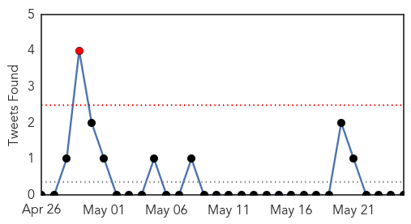
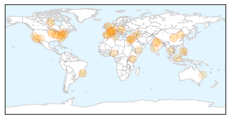
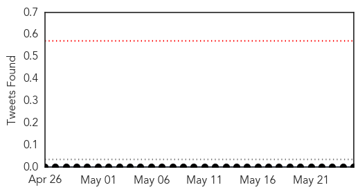

Unknown
30-Day Web Trend
0 alerts, 0 warnings

30-Day Twitter Trend
1 alerts, 0 warnings

Article Locations
Article Confidences

Top Articles:
- 0.946
- 53 People Sick with Salmonella After Eating Raw Tuna, What Caused It?
- 0.917
- Chicago Tribune
- 0.917
- Chicago Tribune
- 0.917
- Chicago Tribune
- 0.917
- Chicago Tribune
- 0.917
- Chicago Tribune
- 0.917
- Chicago Tribune
- 0.910
- The world windows to Thailand
- 0.890
- The Rocky Mount Telegram
- 0.865
- To end tuberculosis, we have to talk about it
- 0.863
- Wide Use of Antibiotics Allows C. Diff to Flourish
- 0.830
- China's unaddressed mental health problems
- 0.816
- Intestinal Flu Virus Hits Armavir Kindergartens: Sanitary Conditions Found to be Lacking
- 0.799
- Outbreak of Salmonella infections related to contact with live baby poultry -- OTTAWA, May 25, 2015
- 0.756
- Kenya : Seven children die, 100 admitted following malaria outbreak
- 0.724
- Indiana in the Grip of Lyme Disease
- 0.719
- 35 mental hosp inmates ill after drinking water
- 0.700
- 66 per cent of malaria cases in 2014 derive from monkeys – BorneoPost Online
- 0.662
- Avian Flu Crisis Spreads, Egg Prices Set To Skyrocket
- 0.628
- India heatwave kills more than 750 people as temperatures near 50C
- 0.615
- USA continues to battle avian flu
- 0.609
- Health And Family, Lifestyle Features, The Philippine Star
- 0.609
- Deadly doggie virus season approaches the Valley
- 0.592
- الاخبار المصورة
- 0.584
- Experts Predict A Rough Tick Season Ahead
- 0.582
- Anxious wait for legionella test results at Hervey Bay Hospital
- 0.577
- Safe hospitals project
- 0.577
- What Determines When Doctors Test for Celiac Disease?
- 0.568
- The Caledonian-Record
- 0.565
- Prevalence, source of rabies different in Ohio than other parts
- 0.560
- More ticks in Indiana could mean more Lyme disease
- 0.558
- Canada Sees An Increase In Lyme Disease As Climate Change Brings Ticks Up North
- 0.555
- Non-memory Alzheimer's symptoms more likely in younger people
- 0.553
- Free HIV Tests Now Available Following HIV Outbreak In Indiana
- 0.545
- ‘Beautiful Mind’ mathematician John Nash dies in car crash
- 0.545
- Tunisian soldier opens fire on fellow troops at military base
- 0.545
- Assad’s warplanes pound IS group targets in Palmyra
- 0.545
- Regional cooperation lacking in Rohingya migrant crisis
- 0.545
- Jailed Venezuelan opposition leader goes on hunger strike
- 0.545
- Hezbollah leader vows to fight Islamic State group ‘everywhere’
- 0.545
- Expelled leader of May 1968 uprising granted French citizenship
- 0.536
- iafrica.com Chris Hani Baragwanath set for revamp
- 0.503
- Revert health services to nat’l gov’t
Top Tweets:
-
No tweets found for May 25, 2015
Measles
30-Day Web Trend
0 alerts, 0 warnings

30-Day Twitter Trend
0 alerts, 0 warnings

Article Locations

Article Confidences

Top Articles:
-
No articles found for May 25, 2015
Top Tweets:
-
No tweets found for May 25, 2015